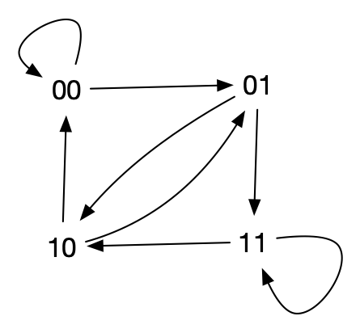

Théorie des graphes : mots de Brujin
Auteur :But
Des graphes eulérien là où ne s’y attend pas. Une application qui montre encore une fois comme preuve d’existence et algorithme de création de structure sont intimement liés.
Le problème du digicode
On a encore oublié ce fichu code de la porte d’entrée. Quel est le moyen le plus rapide de trouver le bon code ?
formalisation du problème
Il faut trouver un mot de longueur $p$ d’un alphabet $\mathcal{A}$ à $n$ caractères (un mot est une suite de $p$ caractère de $\mathcal{A}$).
Exemple : Les mots de longueur $p=3$ de l’alphabet $\{0, 1\}$ à $n=2$ caratères. Il y a $n^p$ = 2^3 = 8$ mots de longueur 3 différents qui sont :
- $000$
- $001$
- $010$
- $011$
- $100$
- $101$
- $110$
- $111$
tous les mots
Si l’on veut trouver une chaîne de caractère qui contient tous les mots de longueur $p$ d’un alphabet à $n$ caractère on peut coller bout à bout tous les mots.
Exemple : Dans l’exemple cela donne par exemple le mot : $000001010011100101110111$ de longueur $p \cdot n^p = 3 \cdot 2^3 = 24$.
La longueur la plus petite possible d’une chaine de caractère qui contientdrait tous les mots serait que les mots se chevauchent : les $p-1$ premiers caratères du ième mot seraient égaux aux $p-1- derniers caractères du (i+1)ème mot.
Dans ce cas là, chaque mot de conterait que pour 1 nouveau caractère dans la chaine, à par le premier mot qu’il faudrait écrire entièrement. On aurait donc une taille théorique minimale de $p + 1 \cdot (n^p - 1) = p - 1 + n^p$ caractères (le 1er mot compte pour $p$ caractères les autres comptent uniquement pour 1 caractère).
Exemple : La longueur minimale est de $3-1 + 2^3 = 10$, qui est bien plus petit que 24.
Sauf qu’on ne sait pas si un tel mot existe…
Brujin et Euler to the rescue
Considérons le graphe orienté suivant, appelé graphe de Brujin, $G=(V, E)$ où
- $V$ est l’ensemble des mots delongueur $p-1$
- $xy \in E$ si les $p-2$ derniers caractères de $x$ sont les $p-2$ premiers caractères de $y$.
propriétés
Si $xy$ est un arc du graphe, alors on a que $x = aX$ et $y= Xb$ où $X$ est un mot de longueur $p-2$ et $a$et $b$ des caractères : l’arc correspond au mot de longueur $p$ = $aXb$ et ce mot n’apparaît qu’une fois (car à ce mot ne correspond qu’un unique $x$ et $y$).
Réciproquement chaque mot de longueur $p$ pouvant s’écrire sous la forme $aXb$ avec $X$ un mot de longueur $p-2$ et $a$ et $b$ des caractères, tout mot de longueur $p$ est associé à un arc.
Enfin, pour un sommet $x$ donné, il possède $n$ arc entrant (correspondant à tous les mots de longueur $p-1$ dont les $p-2$ derniers caractères correspondent aux $p-2$ premiers caractères de $x$) et $n$ arc sortant (correspondant à tous les mots de longueur $p-1$ dont les $p-2$ premiers caractères correspondent aux $p-2$ derniers caractères de $x$) : le graphe $G$ est eulérien.
cycle eulérien
Un cycle eulérien du graphe $G$ correspond à une suite comprenant tous les mots de longueur $p$. En analysant 3 sommets successifs de ce cycle $u_{i-1}u_iu_{i+1}$ on remarque que le mot correspondant à l’arc $u_{i-1}u_i$ et celui correspondant à l’arc $u_iu_{i+1}$ sont tels que les $p-1$ derniers caractères de l’un son les $p-1$ premiers caractères de l’autre.
mot de brujin
Le cycle eulérien $u_0\dots u_k$ nous permet de construire les $n^p différents mots : c’est les mots correspondants aux arcs $u_iu_{i+1}$.
De là on construit le mot qui commence par le mot associé à $u_0u_1$ puis on ajoute itérativement le dernier caractère du sommet $u_i$ pour $i > 1$.
remarque : la construction ci-dessus est équivalente à commencer par le mot associé à $u_0$ et à ajouter itérativement les derniers caractères de tous les $u_i$, $i > 0$.
Ce mot, appelé mot de brujin a bien les propriétés suivantes :
- il contient tous les mots de longueur $p$ de l’alphabet à n caractères,
- il a une taille de $p +(n^p -1)$ caractères
exemple
Le graphe de brujin associé aux mots de longueur 3 de l’alphabet $\{0, 1\}$ est : 
Un cycle eulérien associé est alors 10-01-11-11-10-00-00-01-10 ce qui donne le mot de Brujin associé : 1011100010.